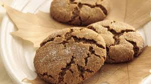

Molasses Crinkles

Description
Soft, flavor-packed, cookies. Beyond ginger snaps.
Ingredients
- 2 1/4 c flour
- 2 tsp baking soda
- 1 tsp cinnamon
- 1 tsp ground ginger
- 1 tsp cayenne pepper
- 1/2 tsp ground cloves
- 1/4 tsp salt
- 1 c brown sugar
- 3/4 c Crisco
- 1 egg
- 1/4 c molasses
- 3 T sugar for coating
Steps
- Combine dry ingredients, whisk and set aside.
- Cream shortening and brown sugar until smooth.
- Add egg and molasses and mix well.
- Add dry ingredients to wet ingredients.
- Stir until even and no dry crumbs are left in bottom of bowl.
- Roll into golf ball sized orbs, then coat with sugar.
- Bake 375 deg for 10 minutes.
Notes
- Recipe is doubleable.
- Single batch makes 2 dozen.
- Try 3 tsp Baking Soda and bake for 9 minutes.
- Non spicy version removes cayenne pepper.
- Credit for original recipe to
Betty Crocker